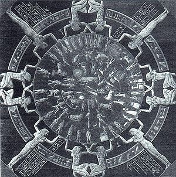
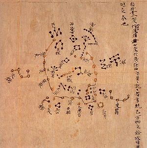

Una constelación, en astronomía, es una agrupación convencional de estrellas, cuya posición en el cielo nocturno es aparentemente invariable. Los pueblos, generalmente de civilizaciones antiguas, decidieron vincularlas mediante trazos imaginarios, creando así siluetas virtuales sobre la esfera celeste. En la inmensidad del espacio, en cambio, las estrellas de una constelación no necesariamente están localmente asociadas; y pueden encontrarse a cientos de años luz unas de otras. Además, dichos grupos son completamente arbitrarios, ya que distintas culturas han ideado constelaciones diferentes, incluso vinculando las mismas estrellas.
Debido al tiempo transcurrido y a la falta de registros históricos, es difícil conocer el origen preciso de las constelaciones más antiguas del mundo occidental. Tal parece que Leo (el león), Taurus (el toro), y Escorpio (el escorpión), existían desde antiguo en la cultura de Mesopotamia, unos 4000 años antes de la era cristiana, aunque no recibían esos nombres necesariamente.
Se cree que el interés de estos antiguos pueblos por la disposición de las estrellas tuvo motivos fundamentalmente prácticos, usualmente con propósitos agrícolas, de viaje y religiosos: como ayuda para medir el tiempo y las estaciones y para servir de orientación a navegantes y mercaderes cuando realizaban travesías durante la noche, ya fuese por mar o por el desierto. Así, imaginando figuras con las cuales relacionar los grupos de estrellas (y creando leyendas e historias de lo que representaban —ver mitología, astrología—) les sería más fácil y seguro recordar las rutas a seguir.
Las constelaciones chinas son uno de los agrupamientos estelares más antiguos del mundo. Estas son muy diferentes de las modernas constelaciones reconocidas por la UAI (que se basan en la astronomía griega); esto se debe principalmente a que el desarrollo de la astronomía china fue independiente, aunque paralelo a la griega.
Los astrónomos chinos dividieron el cielo en 31 regiones, llamados 3 recintos (三垣 sān yuán) y 28 mansiones (二十八宿 èrshíbã xiù). Los tres recintos ocupan la zona cercana al polo norte, por lo que en las latitudes altas se pueden ver durante todo el año, mientras las veintiocho mansiones ocupan la zona del zodiaco, por lo que pueden ser estimados como el equivalente a las doce constelaciones zodiacales occidentales. Contrariamente a la astronomía occidental, las veintiocho mansiones no reflejan el movimiento (aparente) del Sol sino el movimiento de la Luna en su recorrido mensual alrededor de la Tierra.

Carta estelar del libro de Dunhuang, escrito alrededor del año 700.
Las constelaciones corresponden a la Osa Mayor,
Capricornus (Capricornio)y Sagittarius (Sagitario).